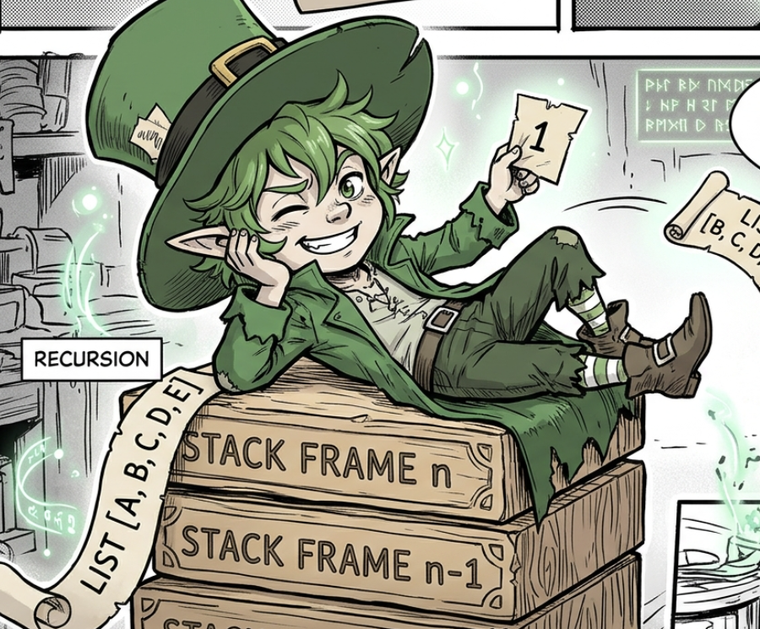

Listes et récursivité 
Ce ne sont pas les listes Python
Ici, on ne parle pas des listes Python (qui sont en réalité des tableaux dynamiques). On étudie la vraie structure de liste, définie récursivement.
La récursivité généralise le principe de récurrence que tu connais en mathématiques. Les listes sont l'outil idéal pour faire ses premiers pas en récursivité.
Pour l'enseignant (non destiné aux élèves) : pourquoi « généralisation de la récurrence »
\(\mathbb{N}\) est une liste comme une autre. Peano définit les entiers naturels exactement comme ce chapitre définit la liste : un cas de base, et un constructeur qui s'applique à un objet du même type.
Nat est une Liste dont les maillons ne portent aucune information : Succ(Succ(Zero)) est Cons(_, Cons(_, Vide)) sans les têtes. La fonction taille est d'ailleurs exactement l'oubli des têtes, de Liste(a) vers Nat.
Un seul fait, deux outils. Un type défini ainsi est le plus petit ensemble qui contient les cas de base et qui est stable par les constructeurs. Ce fait unique donne de quoi démontrer et de quoi définir :
| Sur \(\mathbb{N}\) (le cours de maths) | Sur les listes, et tout type défini par constructeurs | |
|---|---|---|
| Démontrer | récurrence : \(P(0)\), et \(P(n) \Rightarrow P(n+1)\) | récurrence structurelle : \(P(\texttt{Vide})\), et \(P(q) \Rightarrow P(\texttt{Cons}(x, q))\) pour tout \(x\) |
| Définir | suite récurrente : \(u_0 = a\), \(u_{n+1} = f(n, u_n)\) | fonction récursive : un cas par constructeur, appel sur la sous-structure |
La récurrence du lycée est la colonne \(\mathbb{N}\) de ce tableau. La généralisation consiste à remplacer « \(n+1\) » par « n'importe quel constructeur » et « \(n\) » par « ses sous-structures ». Un arbre binaire (Vide ou Noeud(gauche, valeur, droite)) donne ainsi une hérédité à deux hypothèses, une par sous-arbre.
Ce que cela donne dans le code. Dans taille, le cas Vide est l'initialisation, le cas Cons est l'hérédité, et l'appel taille(queue) est l'hypothèse de récurrence. Prouver que taille est juste est une récurrence structurelle mot pour mot : juste sur Vide, et si taille(queue) est juste, 1 + taille(queue) l'est aussi. C'est le « saut de foi » de How to Design Programs (Felleisen et al., section 9), que ses auteurs relient eux-mêmes à l'usage de l'hypothèse de récurrence. Le lutin qui fait confiance à l'autre lutin, c'est cette hypothèse. La terminaison vient avec : chaque appel porte sur une sous-structure stricte, et on ne descend pas indéfiniment dans un objet construit en un nombre fini d'étapes.
Où « totale » demande une réserve. L'énoncé est exact pour la récursivité structurelle, celle de ce chapitre. Il s'étend à la récursivité sur une mesure qui décroît (tri fusion, pgcd), qui relève de la récurrence forte. Mais un langage de programmation accepte aussi des fonctions récursives qui ne terminent pas, ou dont on ignore si elles terminent (la suite de Syracuse). Celles-là ne s'adossent à aucune récurrence : la récursivité générale déborde la récurrence, elle ne s'y réduit pas. C'est ce qui sépare ce chapitre de celui sur la calculabilité.
Source du terme : R. M. Burstall (1969), « Proving Properties of Programs by Structural Induction », The Computer Journal 12(1), 41-48, DOI 10.1093/comjnl/12.1.41.
1 Les listes récursives
1.1 La structure : deux possibilités
Imagine un lutin qui reçoit une liste. Il n'a que deux possibilités devant lui :
- soit la liste est vide
- soit c'est un élément, la tête, suivi d'une autre liste, la queue.
Définition récursive d'une liste
Une liste est :
- soit vide
- soit une tête (un élément) suivie d'une queue (qui est elle-même une liste).
On définit la liste avec sa propre définition : c'est une structure récursive. On l'écrit ainsi :
adésigne un type quelconque (comme leTde Python) : une liste d'entiers, de chaînes, peu importe.- Il y a deux constructeurs,
VideetCons: une liste est l'un ou l'autre. Ce sont les deux possibilités du lutin. - La définition est récursive :
Conscontient uneListe(a)(la queue).
1.2 Écrire une liste à la main
Cette notation est un vrai langage : Gleam
La notation que tu utilises depuis le début pour ranger les cas n'est pas qu'une façon d'écrire au tableau : c'est un vrai langage de programmation, Gleam, un petit langage fonctionnel. Tu vas maintenant l'exécuter.
- Gleam n'a aucune boucle : ni
for, niwhile. La seule façon de parcourir une structure, c'est la récursivité. C'est exactement ce qu'on a appris au tableau pour commencer ce cours. - Gleam n'a pas non plus de
if: toute décision passe par une disjonction de cas, aveccase. -
Sa signature de fonction ressemble à ton Python typé :
Python Gleam def taille(lst) -> int:fn taille(lst: Liste(a)) -> Int { -
Le compilateur est un allié : messages d'erreur clairs, et il t'empêche d'oublier un cas.
Avant de commencer
Gleam s'installe avec nsi install gleam, et tes programmes se lancent avec gleam run et gleam test. Tout est sur la page Gleam, l'atelier, à faire une fois pour toutes avant d'aller plus loin.
Une seule chose à savoir pour lire cette page : la police du site soude certaines paires de symboles en un seul dessin, ->, ==, != et <>. Tu en tapes toujours deux, et la correspondance y est donnée.
Construire
Écris, dans main, la liste des trois chaînes "rouge", "vert", "bleu", puis affiche-la.
1.3 La disjonction de cas
Pour faire quelque chose d'une liste, le lutin regarde laquelle des deux possibilités il a en main. C'est la disjonction de cas, écrite avec case :
- un cas par constructeur : le cas
Vide, et le casCons Cons(tete, queue)déconstruit la liste : ça donne un nom à la tête (tete) et à la queue (queue).
Piège, et garde-fou : les deux cas, toujours
Gleam refuse de compiler si tu oublies un cas. Impossible d'oublier le Vide. Le compilateur te force à penser « cas de base / cas récursif », les deux fondations de toute récursivité.
2 Les trois grands types de problèmes
Presque toutes les fonctions sur les listes relèvent de l'un de ces trois types :
- lire une liste : de la liste à une valeur (
taille,somme,contient) - transformer une liste : d'une liste à une autre liste (
inverser,concat) - faire pousser une liste : d'une graine à une liste (
repete).
2.1 Lire une liste : de la liste à une valeur
Les premières fonctions lisent une liste : elles la parcourent et rendent une valeur qui n'est pas une liste (un nombre, un booléen).
2.1.1 Première fonction : la taille
C'est la fonction qu'on a écrite ensemble au tableau, au début du cours. La voici en Gleam.
Les lutins sont de grosses faignasses. Ils ont la flemme de compter toute la liste, alors chacun en fait le moins possible et refile le reste au suivant.
Le raisonnement du lutin : « Compter toute la liste ? Pas question. Je regarde ce que je reçois. Ou bien c'est Vide, et je réponds 0, ça ne me coûte rien. Ou bien c'est une tête et une queue : je donne la queue à un autre lutin, et je réponds 1, pour ma tête, plus sa réponse. »

_remplacetete: ici on ignore la valeur de la tête (on n'en a pas besoin pour compter).
Traçons taille(Cons(2, Cons(3, Cons(4, Vide)))) :
taille(Cons(2, ...)) = 1 + taille(Cons(3, ...))
= 1 + 1 + taille(Cons(4, Vide))
= 1 + 1 + 1 + taille(Vide)
= 1 + 1 + 1 + 0
= 3
C'est la pile d'appels
Chaque ligne où un lutin attend le résultat d'un autre est un appel empilé : la pile grandit à la descente (jusqu'à Vide), puis se vide à la remontée, quand chaque 1 + ... se calcule enfin. Cette cascade est la pile d'appels, le mécanisme caché de toute récursion (on la retrouvera partout : arbres, tri fusion).
Cas de base
J'hésite à t'expliquer ici ce que c'est, tellement c'est martelé en cours.
Un cas de base est un cas où la réponse est immédiate, sans appel à soi-même : ici Vide -> 0. Il peut y en avoir plusieurs, et c'est fréquent. Un cas récursif est un cas où la fonction s'appelle elle-même, et elle le fait toujours sur une sous-structure de ce qu'on lui a donné : ici taille(queue), c'est-à-dire sur une liste strictement plus courte.
C'est cette deuxième chose qui assure la terminaison. Chaque appel porte sur une liste plus courte d'un maillon, donc on converge vers un cas de base, et comme une liste a une taille finie, on en atteint un en un nombre fini d'étapes. Le calcul finit.
Si l'appel récursif ne rapproche d'aucun cas de base, par exemple taille(lst) au lieu de taille(queue), rien ne converge, le calcul ne finit jamais, et la machine finit par refuser d'aller plus loin.
Pour écrire, ne déroule pas
La trace sert à comprendre ce que fait la machine. Pour écrire une fonction récursive, on ne déroule rien : on fait confiance à l'appel sur la queue, comme le lutin fait confiance à l'autre lutin, et on se demande seulement quoi faire de sa réponse.
Prédire
Sans exécuter, écris la trace de f(Cons(2, Cons(3, Cons(4, Vide)))) sur le modèle de celle de taille, puis donne le résultat.
2.1.2 À toi d'écrire
Tester ton code
Tu n'écriras aucun test toi-même dans ce chapitre : chaque exercice te donne le sien, tout fait. Tu le colles dans test/liste_test.gleam, et gleam test les lance tous. La mise en place du fichier et la lecture d'un échec sont sur la page Gleam, l'atelier.
left est ce que ta fonction a renvoyé, right ce qu'on attendait.
Méthode
Avant de coder, écris la disjonction de cas au papier : que renvoie la fonction si la liste est Vide ? et si c'est Cons(tete, queue) ?
Garde ce papier sous la main, et montre-le quand tu appelles ton professeur. Il dit tout de suite si ce qui bloque est ton raisonnement ou la façon de l'écrire en Gleam. Sans lui, il faut chercher les deux à la fois.
La somme
Écris somme(lst: Liste(Int)) -> Int qui renvoie la somme des éléments d'une liste d'entiers.
La somme des pairs
Écris somme_pairs(lst: Liste(Int)) -> Int qui renvoie la somme des seuls éléments pairs. 2 -> 3 -> 4 donne 6.
Il te faut une condition, et Gleam n'a pas de if. Une condition est une expression qui vaut True ou False : tu en fais donc une disjonction de cas, comme pour une liste.
Le test, à coller dans test/liste_test.gleam
Pour aller plus loin : comparer ne rend pas un booléen
Un case sur une condition n'a que deux issues, True et False. Mais comparer deux nombres en a trois, et Gleam a un type exprès pour cela, Order, avec ses trois valeurs Lt (plus petit), Eq (égal) et Gt (plus grand). C'est ce que renvoie int.compare :
import gleam/int
import gleam/order.{Eq, Gt, Lt}
pub fn comparer(a: Int, b: Int) -> String {
case int.compare(a, b) {
Lt -> "plus petit"
Eq -> "égal"
Gt -> "plus grand"
}
}
Les trois cas sont là, et le compilateur vérifie qu'aucun ne manque, exactement comme pour Vide et Cons. Avec des booléens il aurait fallu enchaîner a < b, puis a == b, sans que rien ne garantisse d'avoir tout couvert. C'est la forme qu'on retrouvera pour trier.
OU, ET, NON en Gleam
Une fonction qui renvoie un Bool se construit souvent en combinant des conditions. Les trois opérateurs s'écrivent ainsi :
| Gleam | Python | |
|---|---|---|
| OU | a || b |
a or b |
| ET | a && b |
a and b |
| NON | !a |
not a |
n > 0 && n < 10 // n est entre 1 et 9
n < 0 || n > 100 // n est hors de [0 ; 100]
!{ n == 5 } // n ne vaut pas 5 (on peut aussi écrire n != 5)
Pour grouper une expression, Gleam utilise des accolades { }, pas des parenthèses : on écrit !{ n == 5 }.
Comme or et and en Python, || et && sont paresseux : si la partie gauche suffit à décider (True pour ||, False pour &&), la partie droite n'est pas calculée.
La structure d'abord
Dans tout ce chapitre, une fonction prend la liste en premier paramètre, et le reste ensuite : contient(lst, x), take(lst, n). Ce n'est pas une question de goût, et l'exercice slice te montrera ce que cette règle permet.
Contient
On veut écrire contient(lst: Liste(a), x: a) -> Bool, qui indique si x est présent dans la liste. La réponse sera une expression booléenne, qu'on construit en trois temps.
-
Si la liste est
Vide, que renvoie la fonction ? -
Si la liste est
Cons(tete, queue), complète la phrase : «xest dans la liste si … ou … ». -
Traduis cette phrase en une expression booléenne Gleam. Quelle partie est un appel récursif ?
Écris maintenant contient en entier.
2.1.3 Deux listes à la fois : les quatre cas
On veut écrire sont_egales(l1: Liste(a), l2: Liste(a)) -> Bool, qui dit si deux listes contiennent les mêmes éléments dans le même ordre. Le lutin en tient maintenant deux en même temps. La méthode tient en trois questions, à se poser dans l'ordre, avant d'écrire la moindre ligne.
Égalité de deux listes
-
Quels sont tous les cas possibles pour le couple d'entrée
(l1, l2)? -
Que doit renvoyer la fonction dans chacun de ces cas ?
-
Parmi ces quatre cas, lesquels sont des cas de base (la réponse est immédiate) et lesquels sont récursifs (il faut redemander à un autre lutin) ?
Écris maintenant sont_egales en Gleam, avec une branche par cas. Pour faire la disjonction sur deux listes à la fois, on les met toutes les deux après case, séparées par une virgule, et chaque branche donne un motif pour chacune. Complète :
Le test, à coller dans test/liste_test.gleam
Quatre cas, même si on pourrait en écrire moins
On pourrait fusionner les deux cas « une seule est vide » en un seul. Ce n'est qu'une optimisation d'écriture, et ce n'est pas le sujet : on écrit les quatre cas pour voir toute la disjonction. Là encore, Gleam exige que les quatre soient traités.
2.2 Transformer une liste : d'une liste à une autre liste
Les listes sont immuables
On ne modifie jamais une liste. Une opération qui semble « modifier » une liste en construit une nouvelle. Le lutin ne rature rien : il reconstruit en retour.
Exemple à lire, ajouter un élément à la fin :
pub fn ajouter_fin(lst: Liste(a), x: a) -> Liste(a) {
case lst {
Vide -> Cons(x, Vide)
Cons(tete, queue) -> Cons(tete, ajouter_fin(queue, x))
}
}
Le lutin ajouteur : « Si je reçois une liste vide, je renvoie la liste qui contient juste x. Sinon, je garde ma tête, je donne la queue à un autre lutin pour qu'il y ajoute x, et je recolle. »
Inverser
Écris inverser(lst: Liste(a)) -> Liste(a) qui renvoie la liste à l'envers.
Le test, à coller dans test/liste_test.gleam
Indice
Cas Vide : la liste renversée est Vide. Cas Cons(tete, queue) : renverse d'abord la queue, puis ajoute tete à la fin avec ajouter_fin.
Avant d'ouvrir le corrigé
En une phrase, sur ton cahier : qu'est-ce que l'indice t'a appris sur ce qui n'allait pas dans ton code ?
Concaténer
Écris concat(l1: Liste(a), l2: Liste(a)) -> Liste(a) qui met l2 à la suite de l1. Il y a deux listes : fais la disjonction des quatre cas, comme pour sont_egales, et traite-les un par un.
2.3 Faire pousser une liste : d'une graine à une liste
Jusqu'ici, le lutin déconstruisait une liste. Il peut aussi en construire une à partir d'une graine (ici, un entier).
La récursivité ne porte plus sur une liste mais sur un entier. Un entier n'a pas de constructeurs Vide et Cons, mais on peut quand même faire une disjonction de cas avec case, en donnant des valeurs comme motifs :
0 ->: le cas oùnvaut exactement0. C'est le cas de base._ ->:_attrape toutes les autres valeurs. C'est le cas récursif, où l'on rappelle la fonction avecn - 1.
C'est exactement la récurrence de ton cours de maths : un cas pour 0, puis le cas \(n\) obtenu à partir du cas \(n - 1\). Les listes suivent la même idée : un cas pour Vide, puis le cas Cons obtenu à partir de la queue.
- Les cas sont essayés dans l'ordre : _ doit venir en dernier, sinon il attraperait aussi 0 (Gleam t'avertit alors que le cas 0 est inatteignable).
Répéter
Écris repete(n: Int, x: a) -> Liste(a) qui renvoie une liste contenant n fois l'élément x (on suppose n positif ou nul). Il n'y a pas de liste à passer ici : c'est la graine n qui vient en premier.
-
Que renvoie
repete(0, x)? -
Si
nn'est pas nul, comment obtenirrepete(n, x)à partir derepete(n - 1, x)?
Complète :
3 Le coût
On appelle \(T(n)\) le nombre d'opérations élémentaires (comparaisons, additions, appels) effectuées par une fonction sur une liste de taille \(n\). Une fonction récursive s'appelle elle-même sur une liste plus courte : son coût \(T(n)\) s'exprime donc à partir de \(T(n-1)\). C'est une suite récurrente, et calculer le coût, c'est trouver sa forme générale.
3.1 Exemple : la taille
- Cas
Vide: un nombre fixe d'opérations, qu'on note \(a\). Donc \(T(0) = a\). - Cas
Cons: un nombre fixe d'opérations (le test, l'addition), qu'on note \(b\), plus l'appel sur la queue, qui est de taille \(n-1\). Donc \(T(n) = T(n-1) + b\).
\(T\) est une suite arithmétique de premier terme \(a\) et de raison \(b\) :
Le coût est proportionnel à \(n\) : il est linéaire, en \(O(n)\). Les valeurs exactes de \(a\) et de \(b\) ne comptent pas, seule la forme de la suite décide.
3.2 À toi : ajouter_fin et inverser
Le coût de inverser
-
Écris la relation de récurrence du coût \(A(n)\) de
ajouter_fin(lst, x), pour une listelstde taille \(n\). Quelle est sa forme générale ? -
inverserappelleinversersur la queue (taille \(n-1\)), puisajouter_finsur le résultat (taille \(n-1\) aussi). Écris la relation de récurrence de son coût \(T(n)\). -
Cette suite n'est ni arithmétique ni géométrique : ce qu'on ajoute à chaque étape grandit avec \(n\). Trouve sa forme générale, en additionnant les écarts \(T(k) - T(k-1)\) pour \(k\) allant de \(1\) à \(n\).
Vérifie en dépliant
Déplie inverser(2 -> 3 -> 4) en écrivant chaque appel à ajouter_fin. Combien de fois chaque élément est-il reparcouru ? Tu dois voir le \(O(n^2)\) apparaître, pas seulement le calculer.
4 Exercices
Comment t'entraîner
Écris chaque fonction en Gleam, avec case. Fais la disjonction de cas au papier avant de coder. Sous chaque exercice, son test à coller dans test/liste_test.gleam, puis son corrigé. (Pour to_str, ajoute import gleam/int en tête de src/liste.gleam.)
Quand tu les auras toutes, tu les réécriras en Python : c'est l'objet de la page Transcription en Python, où les algorithmes seront déjà les tiens et où il ne restera que la syntaxe.
4.1 Lire une liste
to_str
Écris to_str(lst: Liste(Int)) -> String, qui renvoie une chaîne façon "2 -> 3 -> 4 -> _|_" (la liste vide donne "_|_").
tous_vrais
Écris tous_vrais(lst: Liste(Bool)) -> Bool, qui renvoie True si tous les booléens de la liste sont vrais. La liste vide donne True (rien ne le contredit).
au_moins_un_vrai
Écris au_moins_un_vrai(lst: Liste(Bool)) -> Bool, qui renvoie True si au moins un booléen est vrai. La liste vide donne False.
compte
Écris compte(lst: Liste(a), e: a) -> Int, qui compte le nombre d'occurrences d'un élément. compte(2 -> 3 -> 4, 3) vaut 1.
4.2 Transformer une liste
4.2.1 Prendre, sauter, supprimer
take
Écris take(lst: Liste(a), n: Int) -> Liste(a), qui renvoie les n premiers éléments. take(2 -> 3 -> 4, 2) donne 2 -> 3. Si n dépasse la taille, on prend tout.
Le test, à coller dans test/liste_test.gleam
Indice : deux case, l'un dans l'autre
Il y a deux choses à examiner, la liste et le compteur, donc deux disjonctions emboîtées. La liste d'abord, et dans le cas Cons, le compteur, comme pour repete :
Il y a donc deux cas de base : plus de liste, ou plus rien à prendre.
Avant d'ouvrir le corrigé
En une phrase, sur ton cahier : lequel des deux cas de base avais-tu oublié ?
drop
Écris drop(lst: Liste(a), n: Int) -> Liste(a), qui renvoie la liste sans ses n premiers éléments. drop(2 -> 3 -> 4, 1) donne 3 -> 4.
Les cas sont exactement les mêmes que ceux de take : la liste, puis le compteur. Seul ce qu'on renvoie dans chaque cas change.
slice
Écris slice(lst: Liste(a), debut: Int, fin: Int) -> Liste(a), qui renvoie les éléments d'indice debut à fin exclu, c'est-à-dire l'intervalle [debut ; fin). slice(2 -> 3 -> 4, 1, 3) donne 3 -> 4.
Tu n'as aucun case à écrire : take et drop font déjà tout le travail. Trouve dans quel ordre les appeler.
Le test, à coller dans test/liste_test.gleam
Cherche : l'opérateur |>
Cette autre écriture du même corrigé est valable en Gleam :
Va lire ce que fait cet opérateur, le pipe, sur la page L'opérateur pipe, puis réponds sur ton cahier :
- pourquoi les deux écritures font-elles la même chose ?
- pourquoi cesserait-elle de fonctionner si
takeprenait son compteur en premier et sa liste ensuite ?
Tu n'es pas obligé d'écrire ta réponse avec |>, mais tu dois savoir la lire.
supprimer
Écris supprimer(lst: Liste(a), e: a) -> Liste(a), qui renvoie une liste privée de la première occurrence d'un élément. supprimer(2 -> 3 -> 4, 3) donne 2 -> 4.
4.2.2 Par filtrage : vers filter
On garde certains éléments selon une condition, comme somme_pairs l'a fait pour additionner. Écris ces trois fonctions, puis regarde ce qu'elles ont en commun.
impairs
Écris impairs(lst: Liste(Int)) -> Liste(Int), qui garde les éléments impairs. 2 -> 3 -> 4 donne 3.
positifs
Écris positifs(lst: Liste(Int)) -> Liste(Int), qui garde les éléments strictement positifs. 2 -> -3 -> 4 donne 2 -> 4.
negatifs
Écris negatifs(lst: Liste(Int)) -> Liste(Int), qui garde les éléments strictement négatifs. 2 -> -3 -> 4 donne -3.
Ce qu'elles ont en commun. Compare les trois corrigés : ils sont identiques, seule la condition change (t % 2 != 0, t > 0, t < 0). Écrire une fonction par condition, c'est se répéter. L'idée : passer la condition en paramètre. On obtient une seule fonction, filter (c'est son nom partout, dans tous les langages) :
pub fn filter(predicat: fn(a) -> Bool, lst: Liste(a)) -> Liste(a) {
case lst {
Vide -> Vide
Cons(t, q) ->
case predicat(t) {
True -> Cons(t, filter(predicat, q))
False -> filter(predicat, q)
}
}
}
predicat est une fonction (elle prend un élément et renvoie un booléen). Les trois fonctions deviennent alors un seul appel, avec la bonne condition écrite sur place (une fonction anonyme fn(x) { ... }) :
filter(fn(x) { x % 2 != 0 }, lst) // les impairs
filter(fn(x) { x > 0 }, lst) // les positifs
filter(fn(x) { x < 0 }, lst) // les négatifs
filter(fn(x) { x % 2 == 0 }, lst) // les pairs, sans écrire une ligne de plus
filter
Recopie filter dans src/liste.gleam, et vérifie-la.
4.2.3 Par transformation : vers map
Cette fois, on ne garde pas : on transforme chaque élément. Écris ces trois fonctions.
carres
Écris carres(lst: Liste(Int)) -> Liste(Int), qui renvoie les carrés. 2 -> 3 -> 4 donne 4 -> 9 -> 16.
doubles
Écris doubles(lst: Liste(Int)) -> Liste(Int), qui renvoie les doubles. 2 -> 3 -> 4 donne 4 -> 6 -> 8.
triples
Écris triples(lst: Liste(Int)) -> Liste(Int), qui renvoie les triples. 2 -> 3 -> 4 donne 6 -> 9 -> 12.
Même constat. Les trois corrigés sont identiques, seule la transformation change (t * t, 2 * t, 3 * t). On la passe en paramètre : c'est map, et c'est là aussi son nom partout.
pub fn map(f: fn(a) -> b, lst: Liste(a)) -> Liste(b) {
case lst {
Vide -> Vide
Cons(t, q) -> Cons(f(t), map(f, q))
}
}
map(fn(x) { x * x }, lst) // les carrés
map(fn(x) { 2 * x }, lst) // les doubles
map(fn(x) { 3 * x }, lst) // les triples
map
Recopie map dans src/liste.gleam, et vérifie-la.
filter choisit, map transforme
filter garde ou jette des éléments (la liste peut rétrécir), alors que map transforme chaque élément (la liste garde sa taille). Ce sont deux outils très courants, et tu viens de les redécouvrir en remarquant que plusieurs fonctions n'en faisaient qu'une.
5 Tout cela n'était qu'un seul pli
Tu as factorisé deux fois. Les quatre fonctions qui gardaient des éléments n'en faisaient qu'une, filter, et les trois qui les transformaient n'en faisaient qu'une, map. On peut aller une fois de plus, et cette fois c'est presque tout le chapitre qui tombe.
Mets côte à côte somme et map, et regarde ce qui change vraiment :
Même squelette. Deux choses seulement changent : ce qu'on rend sur Vide, et ce qu'on fait de la tête et du résultat de l'appel sur la queue. On les passe toutes les deux en paramètre.
pub fn foldr(lst: Liste(a), f: fn(a, b) -> b, depart: b) -> b {
case lst {
Vide -> depart
Cons(t, q) -> f(t, foldr(q, f, depart))
}
}
Le piège, et il est unique
Le second paramètre de f n'est pas la queue. C'est le résultat déjà calculé de l'appel sur la queue. C'est pour cela qu'on l'appelle reste ci-dessous et jamais queue : quand f est appelée, le travail sur la queue est fini, il ne reste qu'à en faire quelque chose.
C'est le lutin faignant une dernière fois : il reçoit sa tête d'un côté, la réponse de son voisin de l'autre, et il n'a plus qu'à les combiner.
Et voilà des fonctions entières du chapitre, en une ligne chacune.
pub fn taille(lst: Liste(a)) -> Int {
foldr(lst, fn(_, reste) { 1 + reste }, 0)
}
pub fn somme(lst: Liste(Int)) -> Int {
foldr(lst, fn(t, reste) { t + reste }, 0)
}
pub fn concat(l1: Liste(a), l2: Liste(a)) -> Liste(a) {
foldr(l1, fn(t, reste) { Cons(t, reste) }, l2)
}
pub fn map(f: fn(a) -> b, lst: Liste(a)) -> Liste(b) {
foldr(lst, fn(t, reste) { Cons(f(t), reste) }, Vide)
}
Lis concat deux fois : on part de l2 au lieu de Vide, on recolle chaque tête par-dessus, et c'est tout. La concaténation est un pli qui ne change rien, sauf son point de départ.
À toi
Ces quatre-là sont montrées, pas à recopier : tu les as déjà dans ton fichier. Prends-en trois autres, tous_vrais, au_moins_un_vrai et filter, et remplace tes versions par des plis, sans aucun case sur la liste.
Puis relance gleam test. Les tests que tu as déjà collés doivent rester verts : ce sont les mêmes fonctions, écrites autrement. Tu n'as donc aucun test à ajouter, et c'est la meilleure preuve que tu puisses avoir.
5.1 Ce que le pli ne sait pas faire
Sur les vingt-trois fonctions des exercices, dix-sept s'écrivent ainsi. Les six autres résistent, et elles résistent pour trois raisons qui valent d'être vues.
take,dropetslicedoivent transporter un compteur, que le pli ne prévoit pas.supprimerenlève la première occurrence, orfoldrtravaille depuis la droite : écrit naïvement avec un pli, il enlève la dernière.sont_egalesregarde deux listes à la fois, le pli n'en consomme qu'une.repetene consomme aucune liste, il en fabrique une à partir d'un entier. Ce n'est pas un pli du tout, c'est son exact contraire.
Un outil qui couvre dix-sept cas sur vingt-trois est un bon outil. Un outil dont tu sais nommer les six qu'il ne couvre pas est un outil que tu maîtrises.
Pour aller plus loin : ce pli porte un nom
foldr s'appelle un catamorphisme, du grec kata, « vers le bas » : il descend la structure et la réduit. Son contraire, qui fabrique une structure à partir d'une graine, comme repete, s'appelle un anamorphisme, ana, « vers le haut ».
Les deux viennent d'un article de 1991 au titre inoubliable, Meijer, Fokkinga et Paterson, Functional Programming with Bananas, Lenses, Envelopes and Barbed Wire, qui les note avec quatre sortes de crochets, d'où le titre. On y lit noir sur blanc que filter est un catamorphisme, au même titre que length.
La bibliothèque standard de Gleam a les siens, list.fold et list.fold_right, et Python a functools.reduce.
6 Et maintenant, en Python
Tu as les algorithmes. Il reste à les écrire dans le langage de l'épreuve, et c'est l'objet de la page suivante : Transcription en Python. La structure y est la même, portée par des primitives vide, cons, tete, queue et est_vide, et chaque fonction y retrouve la sienne.